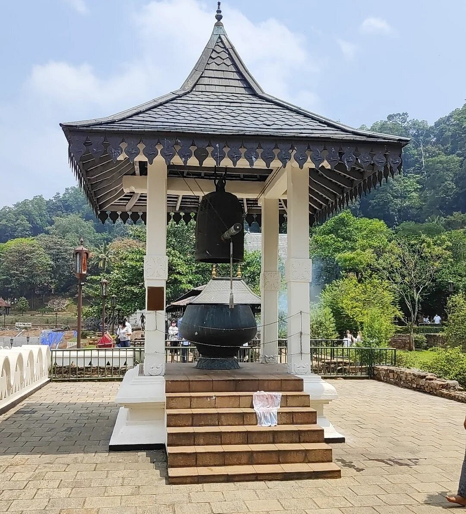

Travel Sri Lanka
Sri Lanka, an island nation in South Asia, boasts a history rich in cultural diversity and historical significance. From ancient kingdoms and Buddhist heritage to European colonization and a post-conflict era, the country has evolved over millennia. Today, Sri Lanka stands as a vibrant and multicultural nation, renowned for its natural beauty, historic sites, and warm, welcoming people.
Elephant Orphanage
The Pinnawala Elephant Orphanage is a renowned sanctuary and conservation center located in Pinnawala, Sri Lanka. Established in 1975, its primary mission is the rescue and rehabilitation of orphaned, injured, and abandoned elephants, with a strong focus on their well-being and preservation.
Visitors to the Pinnawala Elephant Orphanage can observe and interact with these majestic creatures up close as they go about their daily activities. One of the most captivating sights is the daily bathing ritual in the nearby river, where a herd of elephants is led to the water to splash, play, and cool off, creating a picturesque and heartwarming spectacle
Visit The Elephant Orphanage
Sacred Tooth Temple

The Sacred Tooth Temple, known locally as the Sri Dalada Maligawa, is one of the most revered religious sites in Sri Lanka and is located in the city of Kandy. This UNESCO World Heritage Site houses what is believed to be one of the most sacred relics in Buddhism—the tooth relic of Lord Buddha.
The temple is an architectural masterpiece, showcasing traditional Kandyan architecture with intricate woodwork, gilded decorations, and a stunning white façade. Inside the temple, visitors can pay their respects to the sacred tooth relic, which is stored in a gold casket within several nested shrines. Devotees and tourists alike visit the temple to witness daily rituals, including offerings of flowers, incense, and prayers.
Visit The Sacred Tooth Temple
Royal Botanical Gardens

The Royal Botanical Gardens, located in Peradeniya near Kandy, Sri Lanka, is one of the island nation's most renowned and impressive botanical gardens. Established in 1821 during the British colonial era, these gardens are not only a place of great natural beauty but also a significant center for botanical research, conservation, and education.
Visit The Royal Botanical Gardens